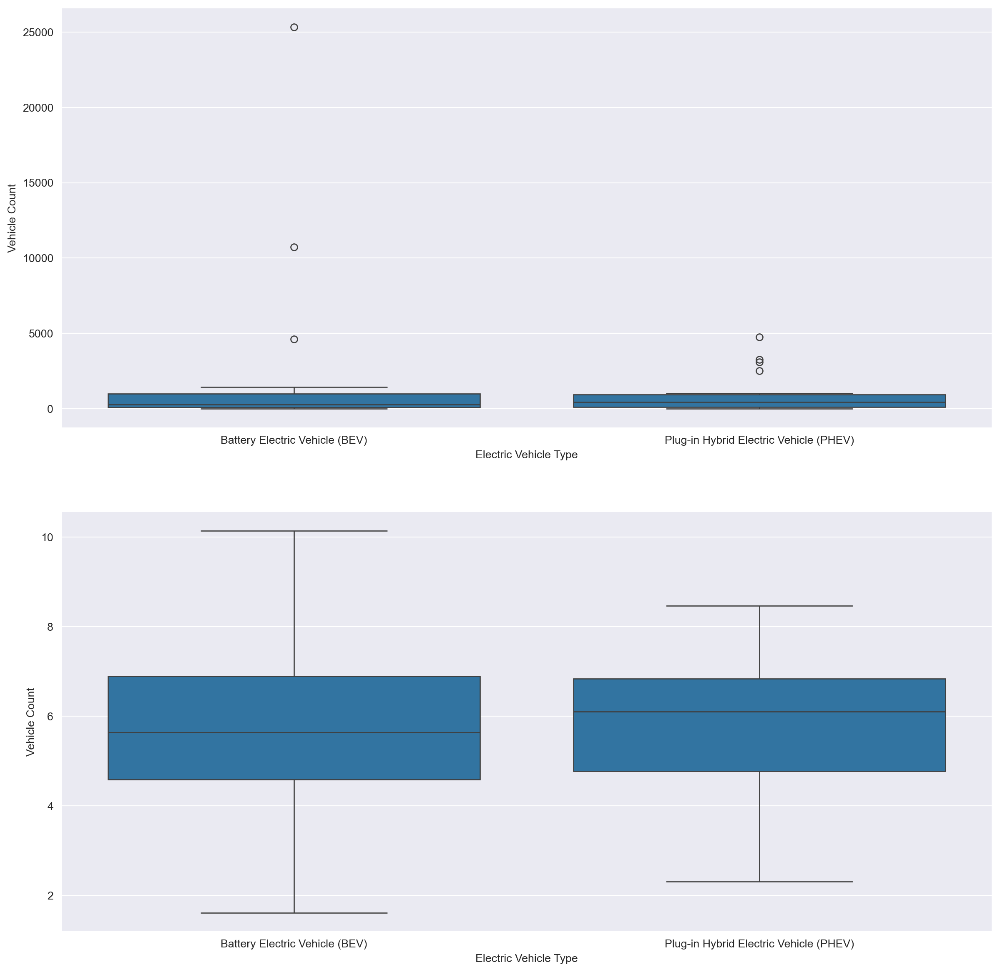
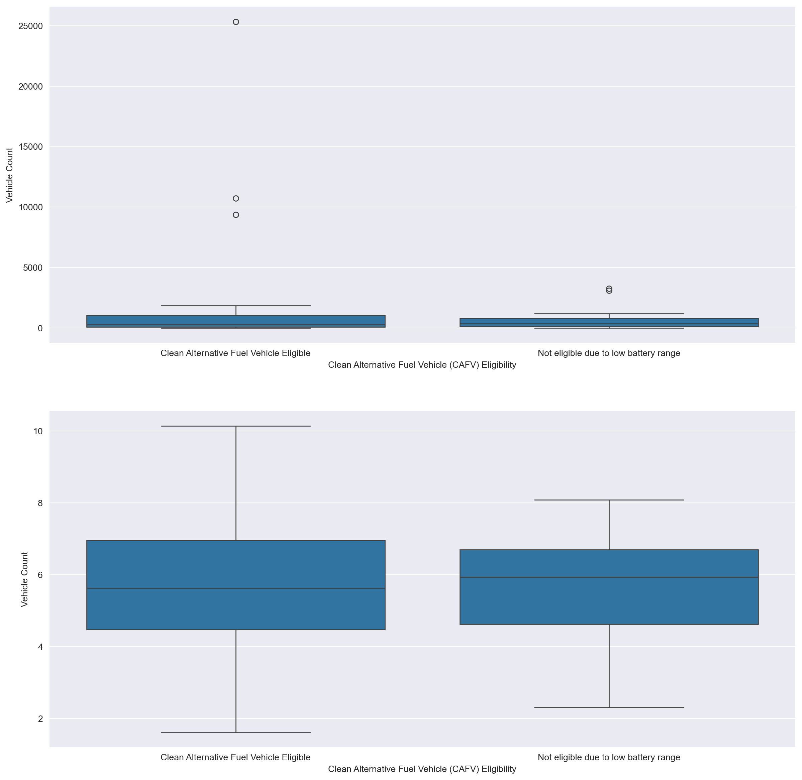

#load needed packages. make sure they are installed.
from pandas import read_csv, set_option, merge, DataFrame, concat
import numpy as np
import matplotlib.pyplot as plt
import seaborn as sns
from sklearn.model_selection import train_test_split
from sklearn.linear_model import LinearRegression, LogisticRegression
from sklearn.preprocessing import LabelEncoder, StandardScaler
from sklearn.metrics import accuracy_score
import statsmodels.api as sm
import statsmodels
from statsmodels.graphics.gofplots import ProbPlot
from scipy import stats
set_option('display.max_columns', None)EV Exploratory Data Analysis
Setup
Load the data.
base_dir = '../../'
df = read_csv(base_dir + 'data/processed-data/brand_model_year_tax_data.csv')
columns_list = df.columns.tolist()
for i in columns_list:
print(i.strip())
numeric_cols = columns_list[28:]
df.columns.tolist()City
State
ZIPCODE
Model Year
Make
Model
Electric Vehicle Type
Clean Alternative Fuel Vehicle (CAFV) Eligibility
Electric Range
Vehicle Count
The State Federal Information Processing System (FIPS) code
The State associated with the ZIP code
Number of returns [3]
Number of single returns
Number of joint returns
Number of head of household returns
Number of electronically filed returns
Number of computer prepared paper returns
Number of returns with paid preparer's signature
Number of returns with direct deposit
Number of returns with virtual currency indicator
Number of individuals [4]
Total number of volunteer prepared returns [5]
Number of volunteer income tax assistance (VITA) prepared returns [5]
Number of tax counseling for the elderly (TCE) prepared returns [5]
Number of volunteer prepared returns with Earned Income Credit [5]
Number of refund anticipation check returns [6]
Number of elderly returns [7]
Adjust gross income (AGI) [8]
Total income amount
Salaries and wages amount
Taxable interest amount
Ordinary dividends amount
Qualified dividends amount [9]
State and local income tax refunds amount
Business or professional net income (less loss) amount
Net capital gain (less loss) amount
Taxable individual retirement arrangements distributions amount
Taxable pensions and annuities amount
Number of farm returns
Unemployment compensation amount [10]
Taxable Social Security benefits amount
Partnership/S-corp net income (less loss) amount
Total statutory adjustments amount
Educator expenses amount
Self-employed (Keogh) retirement plans amount
Self-employed health insurance deduction amount
Individual retirement arrangement payments amount
Student loan interest deduction amount
Charitable contributions if took standard deduction
Total standard deduction amount
Basic standard deduction amount
Additional standard deduction amount
Total itemized deductions amount
Amount of AGI for itemized returns
Total medical and dental expense deduction amount
State and local income taxes amount
State and local general sales tax amount
Real estate taxes amount
Personal property taxes amount
Limited state and local taxes
Total taxes paid amount
Home mortgage interest paid amount
Home mortgage from personal seller amount
Deductible points amount
Qualified mortgage insurance premiums amount
Investment interest paid amount
Total charitable contributions amount
Other non-limited miscellaneous deductions amount
Qualified business income deduction
Taxable income amount
Income tax before credits amount
Alternative minimum tax amount
Excess advance premium tax credit repayment amount
Total tax credits amount
Foreign tax credit amount
Child and dependent care credit amount
Nonrefundable education credit amount
Retirement savings contribution credit amount
Nonrefundable child and other dependent credit amount
Residential energy tax credit amount
Self-employment tax amount
Total premium tax credit amount
Advance premium tax credit amount
Total tax payments amount
Earned income credit amount [12]
Excess earned income credit (refundable) amount [13]
Refundable child tax credit or additional child tax credit amount
Refundable education credit amount
Net premium tax credit amount
Qualified sick and family leave credit for leave taken before April 1, 2021 amount
Refundable child and dependent care credit
Qualified sick and family leave credit for leave taken after March 31, 2021
Recovery rebate credit amount [15]
Economic impact payment third round amount [16, 17]
Income tax after credits amount
Total tax liability amount [18]
Additional Medicare tax amount
Net investment income tax amount
Tax due at time of filing amount [19]
Total overpayments amount
Overpayments refunded amount [20]
Credited to next year’s estimated tax amount['City',
'State',
'ZIPCODE',
'Model Year',
'Make',
'Model',
'Electric Vehicle Type',
'Clean Alternative Fuel Vehicle (CAFV) Eligibility',
'Electric Range',
'Vehicle Count',
'The State Federal Information Processing System (FIPS) code',
'The State associated with the ZIP code',
'Number of returns [3]',
'Number of single returns',
'Number of joint returns',
'Number of head of household returns',
'Number of electronically filed returns',
'Number of computer prepared paper returns',
"Number of returns with paid preparer's signature",
'Number of returns with direct deposit',
'Number of returns with virtual currency indicator',
'Number of individuals [4]',
'Total number of volunteer prepared returns [5]',
'Number of volunteer income tax assistance (VITA) prepared returns [5]',
'Number of tax counseling for the elderly (TCE) prepared returns [5]',
'Number of volunteer prepared returns with Earned Income Credit [5]',
'Number of refund anticipation check returns [6]',
'Number of elderly returns [7]',
'Adjust gross income (AGI) [8]',
'Total income amount',
'Salaries and wages amount',
'Taxable interest amount',
'Ordinary dividends amount',
'Qualified dividends amount [9]',
'State and local income tax refunds amount',
'Business or professional net income (less loss) amount',
'Net capital gain (less loss) amount',
'Taxable individual retirement arrangements distributions amount',
'Taxable pensions and annuities amount',
'Number of farm returns',
'Unemployment compensation amount [10]',
'Taxable Social Security benefits amount',
'Partnership/S-corp net income (less loss) amount',
'Total statutory adjustments amount',
'Educator expenses amount',
'Self-employed (Keogh) retirement plans amount',
'Self-employed health insurance deduction amount',
'Individual retirement arrangement payments amount',
'Student loan interest deduction amount',
'Charitable contributions if took standard deduction',
'Total standard deduction amount',
'Basic standard deduction amount',
'Additional standard deduction amount',
'Total itemized deductions amount',
'Amount of AGI for itemized returns',
'Total medical and dental expense deduction amount',
'State and local income taxes amount',
'State and local general sales tax amount',
'Real estate taxes amount',
'Personal property taxes amount',
'Limited state and local taxes',
'Total taxes paid amount',
'Home mortgage interest paid amount',
'Home mortgage from personal seller amount',
'Deductible points amount',
'Qualified mortgage insurance premiums amount',
'Investment interest paid amount',
'Total charitable contributions amount',
'Other non-limited miscellaneous deductions amount',
'Qualified business income deduction',
'Taxable income amount',
'Income tax before credits amount',
'Alternative minimum tax amount',
'Excess advance premium tax credit repayment amount',
'Total tax credits amount',
'Foreign tax credit amount',
'Child and dependent care credit amount',
'Nonrefundable education credit amount',
'Retirement savings contribution credit amount',
'Nonrefundable child and other dependent credit amount',
'Residential energy tax credit amount',
'Self-employment tax amount',
'Total premium tax credit amount',
'Advance premium tax credit amount',
'Total tax payments amount',
'Earned income credit amount [12] ',
'Excess earned income credit (refundable) amount [13] ',
'Refundable child tax credit or additional child tax credit amount',
'Refundable education credit amount',
'Net premium tax credit amount',
'Qualified sick and family leave credit for leave taken before April 1, 2021 amount',
'Refundable child and dependent care credit',
'Qualified sick and family leave credit for leave taken after March 31, 2021',
'Recovery rebate credit amount [15]',
'Economic impact payment third round amount [16, 17]',
'Income tax after credits amount ',
'Total tax liability amount [18] ',
'Additional Medicare tax amount',
'Net investment income tax amount',
'Tax due at time of filing amount [19] ',
'Total overpayments amount',
'Overpayments refunded amount [20] ',
'Credited to next year’s estimated tax amount']Vehicle Brand Aggregation
sns.set_style('darkgrid')
zip_code_count = df.groupby(['ZIPCODE', 'Electric Vehicle Type']).agg({
'Vehicle Count': 'sum',
}).reset_index()
fig, axes = plt.subplots(2, 1, figsize=(15,15))
sns.histplot(ax=axes[0], data=zip_code_count, y=zip_code_count['Vehicle Count'])
log_zip_code_count = zip_code_count.copy()
log_zip_code_count['Vehicle Count'] = np.log(zip_code_count['Vehicle Count'])
sns.histplot(ax=axes[1], data=log_zip_code_count, y=log_zip_code_count['Vehicle Count'])fig, axes = plt.subplots(2, 1, figsize=(15,15))
sns.boxplot(ax=axes[0], data=zip_code_count, x=zip_code_count['Vehicle Count'])
log_zip_code_count = zip_code_count.copy()
log_zip_code_count['Vehicle Count'] = np.log(zip_code_count['Vehicle Count'])
sns.boxplot(ax=axes[1], data=log_zip_code_count, x=log_zip_code_count['Vehicle Count'])MAKE AND ELECTRIC VEHICLE TYPE
sns.set_style('darkgrid')
make_ev_type = df.groupby(['Make', 'Electric Vehicle Type']).agg({
'Vehicle Count': 'sum',
}).reset_index()
fig, axes = plt.subplots(2, 1, figsize=(15,15))
sns.histplot(ax=axes[0], data=make_ev_type, y=make_ev_type['Vehicle Count'])
log_make_ev_type = make_ev_type.copy()
log_make_ev_type['Vehicle Count'] = np.log(make_ev_type['Vehicle Count'])
sns.histplot(ax=axes[1], data=log_make_ev_type, y=log_make_ev_type['Vehicle Count'])fig, axes = plt.subplots(2, 1, figsize=(15,15))
sns.boxplot(ax=axes[0], data=make_ev_type, x=make_ev_type['Electric Vehicle Type'], y=make_ev_type['Vehicle Count'])
log_make_ev_type = make_ev_type.copy()
log_make_ev_type['Vehicle Count'] = np.log(make_ev_type['Vehicle Count'])
sns.boxplot(ax=axes[1], data=log_make_ev_type, x=make_ev_type['Electric Vehicle Type'], y=log_make_ev_type['Vehicle Count'])
MAKE AND Clean Alt Fuel
sns.set_style('darkgrid')
make_ev_type = df.groupby(['Make', 'Clean Alternative Fuel Vehicle (CAFV) Eligibility']).agg({
'Vehicle Count': 'sum',
}).reset_index()
fig, axes = plt.subplots(2, 1, figsize=(15,15))
sns.histplot(ax=axes[0], data=make_ev_type, y=make_ev_type['Vehicle Count'])
log_make_ev_type = make_ev_type.copy()
log_make_ev_type['Vehicle Count'] = np.log(make_ev_type['Vehicle Count'])
sns.histplot(ax=axes[1], data=log_make_ev_type, y=log_make_ev_type['Vehicle Count'])fig, axes = plt.subplots(2, 1, figsize=(15,15))
sns.boxplot(ax=axes[0], data=make_ev_type, x=make_ev_type['Clean Alternative Fuel Vehicle (CAFV) Eligibility'], y=make_ev_type['Vehicle Count'])
log_make_ev_type = make_ev_type.copy()
log_make_ev_type['Vehicle Count'] = np.log(make_ev_type['Vehicle Count'])
sns.boxplot(ax=axes[1], data=log_make_ev_type, x=make_ev_type['Clean Alternative Fuel Vehicle (CAFV) Eligibility'], y=log_make_ev_type['Vehicle Count'])
Mean
brand_df = df[[
'Residential energy tax credit amount', 'Total income amount', 'Vehicle Count'
]]
fig, axes = plt.subplots(1, 1, figsize=(15,15))
sns.heatmap(data=brand_df)
brand_df.corr()
# brand_df['Electric Range'] = np.log(brand_df['Electric Range'])
# sns.boxplot(ax=axes[1], data=brand_df, y=brand_df['Electric Range'])| Residential energy tax credit amount | Total income amount | Vehicle Count | |
|---|---|---|---|
| Residential energy tax credit amount | 1.000000 | 0.503153 | 0.154667 |
| Total income amount | 0.503153 | 1.000000 | 0.213034 |
| Vehicle Count | 0.154667 | 0.213034 | 1.000000 |
new_brand_df = df.groupby(['ZIPCODE']).agg({
'Total income amount': 'sum',
'Electric Range': 'count'
}).reset_index(drop=True).rename(columns={
'Electric Range': 'Vehicle Count'
})
fig, axes = plt.subplots(2, 1, figsize=(15,15))
new_brand_df['Total income amount'] = new_brand_df['Total income amount'].astype(int)
slope, intercept, r_value, p_value, std_err = stats.linregress(new_brand_df['Total income amount'],new_brand_df['Vehicle Count'])
sns.regplot(ax=axes[0], data=new_brand_df, y='Vehicle Count', x='Total income amount',
ci=None,
label=f"y={0:.1f}x+{1:.1f}\nr-sq: {r_value.round(3)}".format(slope, intercept)).legend(loc="best")
new_brand_df['Vehicle Count'] = np.log(new_brand_df['Vehicle Count'])
new_brand_df['Total income amount'] = np.log(new_brand_df['Total income amount'])
slope, intercept, r_value, p_value, std_err = stats.linregress(new_brand_df['Total income amount'],new_brand_df['Vehicle Count'])
sns.regplot(ax=axes[1],
data=new_brand_df,
x='Total income amount',
y='Vehicle Count',
ci=None,
label=f"y={0:.1f}x+{1:.1f}\nr-sq: {r_value.round(3)}".format(slope, intercept)).legend(loc="best")base_dir = '../../'
df = read_csv(base_dir + 'data/processed-data/brand_model_year_tax_data.csv')
columns_list = df.columns.tolist()
for i in columns_list:
print(i.strip())
# numeric_cols = columns_list[28:]
# df.columns.tolist()City
State
ZIPCODE
Model Year
Make
Model
Electric Vehicle Type
Clean Alternative Fuel Vehicle (CAFV) Eligibility
Electric Range
Vehicle Count
The State Federal Information Processing System (FIPS) code
The State associated with the ZIP code
Number of returns [3]
Number of single returns
Number of joint returns
Number of head of household returns
Number of electronically filed returns
Number of computer prepared paper returns
Number of returns with paid preparer's signature
Number of returns with direct deposit
Number of returns with virtual currency indicator
Number of individuals [4]
Total number of volunteer prepared returns [5]
Number of volunteer income tax assistance (VITA) prepared returns [5]
Number of tax counseling for the elderly (TCE) prepared returns [5]
Number of volunteer prepared returns with Earned Income Credit [5]
Number of refund anticipation check returns [6]
Number of elderly returns [7]
Adjust gross income (AGI) [8]
Total income amount
Salaries and wages amount
Taxable interest amount
Ordinary dividends amount
Qualified dividends amount [9]
State and local income tax refunds amount
Business or professional net income (less loss) amount
Net capital gain (less loss) amount
Taxable individual retirement arrangements distributions amount
Taxable pensions and annuities amount
Number of farm returns
Unemployment compensation amount [10]
Taxable Social Security benefits amount
Partnership/S-corp net income (less loss) amount
Total statutory adjustments amount
Educator expenses amount
Self-employed (Keogh) retirement plans amount
Self-employed health insurance deduction amount
Individual retirement arrangement payments amount
Student loan interest deduction amount
Charitable contributions if took standard deduction
Total standard deduction amount
Basic standard deduction amount
Additional standard deduction amount
Total itemized deductions amount
Amount of AGI for itemized returns
Total medical and dental expense deduction amount
State and local income taxes amount
State and local general sales tax amount
Real estate taxes amount
Personal property taxes amount
Limited state and local taxes
Total taxes paid amount
Home mortgage interest paid amount
Home mortgage from personal seller amount
Deductible points amount
Qualified mortgage insurance premiums amount
Investment interest paid amount
Total charitable contributions amount
Other non-limited miscellaneous deductions amount
Qualified business income deduction
Taxable income amount
Income tax before credits amount
Alternative minimum tax amount
Excess advance premium tax credit repayment amount
Total tax credits amount
Foreign tax credit amount
Child and dependent care credit amount
Nonrefundable education credit amount
Retirement savings contribution credit amount
Nonrefundable child and other dependent credit amount
Residential energy tax credit amount
Self-employment tax amount
Total premium tax credit amount
Advance premium tax credit amount
Total tax payments amount
Earned income credit amount [12]
Excess earned income credit (refundable) amount [13]
Refundable child tax credit or additional child tax credit amount
Refundable education credit amount
Net premium tax credit amount
Qualified sick and family leave credit for leave taken before April 1, 2021 amount
Refundable child and dependent care credit
Qualified sick and family leave credit for leave taken after March 31, 2021
Recovery rebate credit amount [15]
Economic impact payment third round amount [16, 17]
Income tax after credits amount
Total tax liability amount [18]
Additional Medicare tax amount
Net investment income tax amount
Tax due at time of filing amount [19]
Total overpayments amount
Overpayments refunded amount [20]
Credited to next year’s estimated tax amountZIP CODE ONLY
amount_brand_df = df.groupby(['ZIPCODE', 'Electric Vehicle Type'])[numeric_cols].mean(numeric_only=True).reset_index()
brand_df = df.groupby(['ZIPCODE', 'Electric Vehicle Type']).agg({
'Vehicle Count': 'sum',
'Electric Range': 'mean'
}).reset_index()
merged_df = merge(brand_df, amount_brand_df, on=['ZIPCODE', 'Electric Vehicle Type'])
label_encoder = LabelEncoder()
label_encoder.fit(merged_df['Electric Vehicle Type'])
encoded_labels = label_encoder.transform(merged_df['Electric Vehicle Type'])
merged_df['Electric Vehicle Type'] = encoded_labels
# print(merged_df['Vehicle Count'].sort_values(ascending=True).unique().tolist())
merged_df = merged_df.sort_values('Vehicle Count', ascending=False)
print(merged_df)
# merged_df['Vehicle Count'] = np.log(merged_df['Vehicle Count'])
# merged_df = merged_df.loc[(merged_df['Vehicle Count'] < 5.0)]
merged_df = merged_df.loc[(merged_df['Vehicle Count'] != 5.187386) & (merged_df['ZIPCODE'] != 98134.0)]
X_df = merged_df
Y_df = merged_df[['Vehicle Count']]
Y_df = np.log(Y_df)
X_df = merged_df.drop(['Vehicle Count', 'Electric Range', 'ZIPCODE'], axis=1)
X = np.array(X_df)
x = sm.add_constant(X)
Y = np.array(Y_df)
X_train, X_test, y_train, y_test = train_test_split(x,Y,
random_state=104,
test_size=0.2,
shuffle=True)
print(X_train.shape)
print(y_train.shape)
model = sm.OLS(y_train, X_train)
results = model.fit()
results.summary()
p_values = results.pvalues
p_df = DataFrame()
p_df['Feature'] = X_df.columns
p_df['p-value'] = results.pvalues[1:]
feat_list = []
p_val_list = []
for idx, row in p_df.iterrows():
if row['p-value'] < .05:
feat_list.append(row['Feature'])
p_val_list.append(row['p-value'])
else:
continue
new_p_df = DataFrame()
new_p_df['Feature'] = feat_list
new_p_df['p-value'] = p_val_list
X = np.array(X_df[new_p_df['Feature']])
Y = np.array(Y_df)
x = sm.add_constant(X)
X_train, X_test, y_train, y_test = train_test_split(x,Y,
random_state=104,
test_size=0.2,
shuffle=True)
model2 = sm.OLS(y_train, X_train)
results2 = model2.fit()
results2.summary()
p3_values = results2.pvalues
new3 = DataFrame()
new3['Feature'] = new_p_df['Feature']
new3['p-value'] = p3_values[1:]
new3
feat_list3 = []
p_val_list3 = []
for idx, row in new3.iterrows():
if row['p-value'] < .05:
feat_list3.append(row['Feature'])
p_val_list3.append(row['p-value'])
else:
continue
final3_df = DataFrame()
final3_df['Feature'] = feat_list3
final3_df['p-value'] = p_val_list3
final3_df
X = np.array(X_df[final3_df['Feature']])
Y = np.array(Y_df)
x = sm.add_constant(X)
X_train, X_test, y_train, y_test = train_test_split(x,Y,
random_state=104,
test_size=0.2,
shuffle=True)
model3 = sm.OLS(y_train, X_train)
results3 = model3.fit()
Y_pred = results3.predict(X_train).astype(int)
features = ['constant'] + final3_df['Feature'].tolist()
X = DataFrame(X_train, columns=features)
Y = DataFrame(y_train, columns=['Vehicle Count'])
dataframe = concat([X, Y], axis=1)
dataframe
# results3.summary()
features ZIPCODE Electric Vehicle Type Vehicle Count Electric Range \
74 98052 0 1157 156.519907
50 98033 0 882 166.503841
126 98115 0 803 152.658181
10 98006 0 774 169.153312
6 98004 0 738 202.561223
.. ... ... ... ...
670 98923 1 1 53.000000
771 99147 1 1 21.000000
768 99137 0 1 322.000000
765 99130 1 1 25.000000
745 99110 1 1 72.000000
Adjust gross income (AGI) [8] Total income amount \
74 11469221.0 1.150090e+07
50 9075809.0 9.127683e+06
126 5660508.0 5.705396e+06
10 5554414.0 5.594606e+06
6 10285419.0 1.032864e+07
.. ... ...
670 41479.0 4.192500e+04
771 9996.0 9.996000e+03
768 9869.0 9.886000e+03
765 25382.0 2.557800e+04
745 57444.0 5.774600e+04
Salaries and wages amount Taxable interest amount \
74 6520580.0 28414.0
50 4591533.0 34969.0
126 3677409.0 21267.0
10 3258348.0 28544.0
6 5076645.0 79717.0
.. ... ...
670 30107.0 41.0
771 4162.0 27.0
768 5113.0 28.0
765 15086.0 72.0
745 34988.0 125.0
Ordinary dividends amount Qualified dividends amount [9] \
74 241134.0 200658.0
50 321104.0 262470.0
126 183825.0 139464.0
10 170168.0 127659.0
6 462927.0 306156.0
.. ... ...
670 362.0 206.0
771 57.0 30.0
768 52.0 22.0
765 201.0 110.0
745 264.0 122.0
State and local income tax refunds amount \
74 86.0
50 139.0
126 72.0
10 47.0
6 149.0
.. ...
670 0.0
771 0.0
768 0.0
765 0.0
745 0.0
Business or professional net income (less loss) amount \
74 110229.0
50 206670.0
126 146455.0
10 118329.0
6 153582.0
.. ...
670 700.0
771 0.0
768 0.0
765 89.0
745 1682.0
Net capital gain (less loss) amount \
74 1140096.0
50 1967750.0
126 953676.0
10 1245685.0
6 3298449.0
.. ...
670 2146.0
771 134.0
768 531.0
765 1121.0
745 1389.0
Taxable individual retirement arrangements distributions amount \
74 99509.0
50 109867.0
126 130601.0
10 159792.0
6 148744.0
.. ...
670 802.0
771 378.0
768 0.0
765 495.0
745 1642.0
Taxable pensions and annuities amount Number of farm returns \
74 105202.0 0.0
50 101748.0 27.0
126 156388.0 27.0
10 112086.0 20.0
6 85009.0 22.0
.. ... ...
670 2116.0 32.0
771 1440.0 0.0
768 1319.0 0.0
765 2667.0 25.0
745 4289.0 37.0
Unemployment compensation amount [10] \
74 43653.0
50 28701.0
126 42111.0
10 30108.0
6 20827.0
.. ...
670 1095.0
771 0.0
768 0.0
765 285.0
745 1207.0
Taxable Social Security benefits amount \
74 73032.0
50 70386.0
126 95828.0
10 72298.0
6 63596.0
.. ...
670 1401.0
771 936.0
768 538.0
765 1199.0
745 1885.0
Partnership/S-corp net income (less loss) amount \
74 189874.0
50 498727.0
126 262147.0
10 343116.0
6 834329.0
.. ...
670 1671.0
771 0.0
768 0.0
765 1948.0
745 4810.0
Total statutory adjustments amount Educator expenses amount \
74 31684.0 87.0
50 51874.0 56.0
126 44888.0 118.0
10 40192.0 63.0
6 43218.0 27.0
.. ... ...
670 446.0 0.0
771 0.0 0.0
768 17.0 0.0
765 196.0 0.0
745 302.0 0.0
Self-employed (Keogh) retirement plans amount \
74 7858.0
50 14500.0
126 14597.0
10 13177.0
6 13686.0
.. ...
670 0.0
771 0.0
768 0.0
765 0.0
745 0.0
Self-employed health insurance deduction amount \
74 6483.0
50 10507.0
126 10354.0
10 9141.0
6 10221.0
.. ...
670 0.0
771 0.0
768 0.0
765 0.0
745 0.0
Individual retirement arrangement payments amount \
74 2987.0
50 2306.0
126 3057.0
10 3691.0
6 2306.0
.. ...
670 0.0
771 0.0
768 0.0
765 0.0
745 0.0
Student loan interest deduction amount \
74 555.0
50 274.0
126 612.0
10 159.0
6 239.0
.. ...
670 0.0
771 0.0
768 0.0
765 0.0
745 0.0
Charitable contributions if took standard deduction \
74 3848.0
50 2109.0
126 3344.0
10 2251.0
6 1832.0
.. ...
670 54.0
771 16.0
768 24.0
765 57.0
745 99.0
Total standard deduction amount Basic standard deduction amount \
74 528025.0 521124.0
50 254157.0 248614.0
126 384956.0 376803.0
10 271831.0 265655.0
6 252566.0 248083.0
.. ... ...
670 12670.0 12467.0
771 2289.0 2160.0
768 3309.0 3181.0
765 7038.0 6841.0
745 14517.0 14217.0
Additional standard deduction amount Total itemized deductions amount \
74 6901.0 249445.0
50 5544.0 331843.0
126 8153.0 242498.0
10 6174.0 198820.0
6 4482.0 375719.0
.. ... ...
670 202.0 0.0
771 123.0 0.0
768 119.0 0.0
765 194.0 0.0
745 299.0 1249.0
Amount of AGI for itemized returns \
74 2960814.0
50 5953823.0
126 2679230.0
10 2624996.0
6 6598885.0
.. ...
670 0.0
771 0.0
768 0.0
765 0.0
745 7431.0
Total medical and dental expense deduction amount \
74 25586.0
50 13737.0
126 20974.0
10 15154.0
6 17461.0
.. ...
670 0.0
771 0.0
768 0.0
765 0.0
745 0.0
State and local income taxes amount \
74 7876.0
50 32721.0
126 12363.0
10 13289.0
6 36060.0
.. ...
670 0.0
771 0.0
768 0.0
765 0.0
745 0.0
State and local general sales tax amount Real estate taxes amount \
74 16960.0 49671.0
50 22606.0 72293.0
126 16322.0 51789.0
10 12837.0 47829.0
6 12015.0 74886.0
.. ... ...
670 0.0 0.0
771 0.0 0.0
768 0.0 0.0
765 0.0 0.0
745 53.0 107.0
Personal property taxes amount Limited state and local taxes \
74 1867.0 50647.0
50 2067.0 52347.0
126 1631.0 51635.0
10 1630.0 40499.0
6 1375.0 37206.0
.. ... ...
670 0.0 0.0
771 0.0 0.0
768 0.0 0.0
765 0.0 0.0
745 0.0 198.0
Total taxes paid amount Home mortgage interest paid amount \
74 51153.0 80373.0
50 52752.0 88916.0
126 51885.0 79851.0
10 40726.0 65570.0
6 37457.0 61954.0
.. ... ...
670 0.0 0.0
771 0.0 0.0
768 0.0 0.0
765 0.0 0.0
745 198.0 0.0
Home mortgage from personal seller amount Deductible points amount \
74 1475.0 1008.0
50 1975.0 718.0
126 1334.0 660.0
10 1050.0 506.0
6 2168.0 492.0
.. ... ...
670 0.0 0.0
771 0.0 0.0
768 0.0 0.0
765 0.0 0.0
745 0.0 0.0
Qualified mortgage insurance premiums amount \
74 106.0
50 140.0
126 141.0
10 40.0
6 25.0
.. ...
670 0.0
771 0.0
768 0.0
765 0.0
745 0.0
Investment interest paid amount Total charitable contributions amount \
74 4968.0 76944.0
50 8484.0 150375.0
126 3199.0 78003.0
10 4763.0 60551.0
6 27156.0 214699.0
.. ... ...
670 0.0 0.0
771 0.0 0.0
768 0.0 0.0
765 0.0 0.0
745 0.0 483.0
Other non-limited miscellaneous deductions amount \
74 7243.0
50 11819.0
126 4730.0
10 9994.0
6 12967.0
.. ...
670 0.0
771 0.0
768 0.0
765 0.0
745 0.0
Qualified business income deduction Taxable income amount \
74 44521.0 9930593.0
50 80129.0 7610660.0
126 50866.0 4995173.0
10 60924.0 5035260.0
6 139937.0 9526741.0
.. ... ...
670 439.0 28007.0
771 0.0 7550.0
768 0.0 6784.0
765 514.0 17925.0
745 849.0 40794.0
Income tax before credits amount Alternative minimum tax amount \
74 2236954.0 5276.0
50 1909603.0 11840.0
126 1092674.0 3778.0
10 1200114.0 6326.0
6 2508777.0 7158.0
.. ... ...
670 3958.0 0.0
771 1002.0 0.0
768 927.0 0.0
765 2504.0 0.0
745 5518.0 0.0
Excess advance premium tax credit repayment amount \
74 603.0
50 511.0
126 647.0
10 679.0
6 550.0
.. ...
670 0.0
771 0.0
768 0.0
765 0.0
745 0.0
Total tax credits amount Foreign tax credit amount \
74 30058.0 21822.0
50 26299.0 18578.0
126 23205.0 10302.0
10 29514.0 23338.0
6 85435.0 75575.0
.. ... ...
670 173.0 0.0
771 0.0 0.0
768 7.0 0.0
765 50.0 0.0
745 134.0 1.0
Child and dependent care credit amount \
74 116.0
50 41.0
126 106.0
10 45.0
6 29.0
.. ...
670 0.0
771 0.0
768 0.0
765 0.0
745 0.0
Nonrefundable education credit amount \
74 1575.0
50 796.0
126 1606.0
10 1066.0
6 733.0
.. ...
670 33.0
771 0.0
768 0.0
765 0.0
745 28.0
Retirement savings contribution credit amount \
74 127.0
50 63.0
126 90.0
10 82.0
6 53.0
.. ...
670 9.0
771 0.0
768 0.0
765 0.0
745 10.0
Nonrefundable child and other dependent credit amount \
74 2035.0
50 857.0
126 1126.0
10 1273.0
6 636.0
.. ...
670 49.0
771 0.0
768 0.0
765 15.0
745 40.0
Residential energy tax credit amount Self-employment tax amount \
74 575.0 15224.0
50 666.0 19446.0
126 706.0 22422.0
10 421.0 16083.0
6 263.0 19058.0
.. ... ...
670 0.0 243.0
771 0.0 0.0
768 0.0 0.0
765 0.0 110.0
745 0.0 245.0
Total premium tax credit amount Advance premium tax credit amount \
74 5060.0 4860.0
50 2931.0 2812.0
126 3640.0 3353.0
10 4649.0 4524.0
6 2746.0 2740.0
.. ... ...
670 0.0 0.0
771 0.0 0.0
768 0.0 0.0
765 0.0 0.0
745 145.0 143.0
Total tax payments amount Earned income credit amount [12] \
74 2293371.0 2831.0
50 1958357.0 1296.0
126 1085793.0 2028.0
10 1150453.0 1775.0
6 2488909.0 1150.0
.. ... ...
670 5439.0 304.0
771 1023.0 0.0
768 1187.0 72.0
765 2676.0 134.0
745 6973.0 408.0
Excess earned income credit (refundable) amount [13] \
74 1972.0
50 898.0
126 1420.0
10 1241.0
6 788.0
.. ...
670 208.0
771 0.0
768 61.0
765 104.0
745 300.0
Refundable child tax credit or additional child tax credit amount \
74 12385.0
50 5916.0
126 8726.0
10 7325.0
6 3899.0
.. ...
670 615.0
771 0.0
768 76.0
765 320.0
745 789.0
Refundable education credit amount Net premium tax credit amount \
74 772.0 979.0
50 399.0 727.0
126 581.0 1030.0
10 619.0 1019.0
6 359.0 684.0
.. ... ...
670 21.0 0.0
771 0.0 0.0
768 0.0 0.0
765 0.0 0.0
745 0.0 0.0
Qualified sick and family leave credit for leave taken before April 1, 2021 amount \
74 138.0
50 0.0
126 57.0
10 90.0
6 103.0
.. ...
670 0.0
771 0.0
768 0.0
765 0.0
745 0.0
Refundable child and dependent care credit \
74 1190.0
50 720.0
126 1518.0
10 804.0
6 418.0
.. ...
670 0.0
771 0.0
768 0.0
765 0.0
745 0.0
Qualified sick and family leave credit for leave taken after March 31, 2021 \
74 109.0
50 34.0
126 110.0
10 84.0
6 93.0
.. ...
670 0.0
771 0.0
768 0.0
765 0.0
745 0.0
Recovery rebate credit amount [15] \
74 3480.0
50 1681.0
126 2545.0
10 1937.0
6 1743.0
.. ...
670 91.0
771 0.0
768 0.0
765 0.0
745 129.0
Economic impact payment third round amount [16, 17] \
74 38168.0
50 20428.0
126 33632.0
10 23736.0
6 18070.0
.. ...
670 1701.0
771 239.0
768 426.0
765 999.0
745 2161.0
Income tax after credits amount Total tax liability amount [18] \
74 2206895.0 2401744.0
50 1850387.0 1999908.0
126 1069469.0 1135279.0
10 1170596.0 1243681.0
6 2423341.0 2587608.0
.. ... ...
670 3746.0 4128.0
771 995.0 1064.0
768 917.0 1011.0
765 2449.0 2688.0
745 5388.0 5720.0
Additional Medicare tax amount Net investment income tax amount \
74 23460.0 39685.0
50 23126.0 84240.0
126 11676.0 28108.0
10 13720.0 41217.0
6 28413.0 112856.0
.. ... ...
670 0.0 0.0
771 0.0 0.0
768 0.0 0.0
765 0.0 0.0
745 0.0 0.0
Tax due at time of filing amount [19] Total overpayments amount \
74 261873.0 101606.0
50 245394.0 130111.0
126 142559.0 92334.0
10 179928.0 85579.0
6 313370.0 212568.0
.. ... ...
670 473.0 1685.0
771 149.0 173.0
768 123.0 278.0
765 559.0 731.0
745 800.0 2049.0
Overpayments refunded amount [20] \
74 78312.0
50 52177.0
126 58805.0
10 44559.0
6 66714.0
.. ...
670 1635.0
771 171.0
768 277.0
765 718.0
745 1889.0
Credited to next year’s estimated tax amount
74 23032.0
50 77752.0
126 33529.0
10 40783.0
6 145464.0
.. ...
670 0.0
771 0.0
768 0.0
765 0.0
745 0.0
[867 rows x 79 columns]
(692, 77)
(692, 1)['constant',
'Electric Vehicle Type',
'Adjust gross income (AGI) [8]',
'Total income amount',
'State and local income tax refunds amount',
'Taxable pensions and annuities amount',
'Number of farm returns',
'Total statutory adjustments amount',
'Self-employed (Keogh) retirement plans amount',
'Total standard deduction amount',
'Basic standard deduction amount',
'Additional standard deduction amount',
'Total medical and dental expense deduction amount',
'Limited state and local taxes',
'Home mortgage from personal seller amount',
'Alternative minimum tax amount',
'Child and dependent care credit amount',
'Net premium tax credit amount',
'Qualified sick and family leave credit for leave taken before April 1, 2021 amount',
'Credited to next year’s estimated tax amount']# model values
model_fitted_y = results3.fittedvalues
# model residuals
model_residuals = results3.resid
# normalized residuals
model_norm_residuals = results3.get_influence().resid_studentized_internal
# absolute squared normalized residuals
model_norm_residuals_abs_sqrt = np.sqrt(np.abs(model_norm_residuals))
# absolute residuals
model_abs_resid = np.abs(model_residuals)
# leverage, from statsmodels internals
model_leverage = results3.get_influence().hat_matrix_diag
# cook's distance, from statsmodels internals
model_cooks = results3.get_influence().cooks_distance[0]
plot_lm_1 = plt.figure()
plot_lm_1.axes[0] = sns.residplot(x=model_fitted_y, y=dataframe.columns[-1], data=dataframe,
lowess=True,
scatter_kws={'alpha': 0.5},
line_kws={'color': 'red', 'lw': 1, 'alpha': 0.8})
plot_lm_1.axes[0].set_title('Residuals vs Fitted')
plot_lm_1.axes[0].set_xlabel('Fitted values')
plot_lm_1.axes[0].set_ylabel('Residuals')
df = DataFrame()
df['res'] = model_residuals
df['fitted'] = model_fitted_y
df['count'] = dataframe['Vehicle Count']
# df['ZIPCODE'] = dataframe['ZIPCODE']
maxr = np.max(model_residuals)
df.sort_values('fitted', ascending=False)| res | fitted | count | |
|---|---|---|---|
| 675 | -1.054547 | 7.558835 | 6.504288 |
| 190 | -1.038863 | 7.494061 | 6.455199 |
| 433 | -0.972422 | 7.267688 | 6.295266 |
| 117 | -0.185570 | 7.239156 | 7.053586 |
| 585 | -0.339142 | 6.990714 | 6.651572 |
| ... | ... | ... | ... |
| 607 | 0.089480 | -0.089480 | 0.000000 |
| 468 | 0.130421 | -0.130421 | 0.000000 |
| 227 | 0.131590 | -0.131590 | 0.000000 |
| 442 | 1.237539 | -0.138926 | 1.098612 |
| 515 | 0.854031 | -0.160884 | 0.693147 |
692 rows × 3 columns
Normal Q-Q Plot
This plot shows if the residuals are normally distributed. A good normal QQ plot has all of the residuals lying on or close to the red line.
QQ = ProbPlot(model_norm_residuals)
plot_lm_2 = QQ.qqplot(line='45', alpha=0.5, color='#4C72B0', lw=1)
plot_lm_2.axes[0].set_title('Normal Q-Q')
plot_lm_2.axes[0].set_xlabel('Theoretical Quantiles')
plot_lm_2.axes[0].set_ylabel('Standardized Residuals')
# annotations
abs_norm_resid = np.flip(np.argsort(np.abs(model_norm_residuals)), 0)
abs_norm_resid_top_3 = abs_norm_resid[:3]
for r, i in enumerate(abs_norm_resid_top_3):
plot_lm_2.axes[0].annotate(i,
xy=(np.flip(QQ.theoretical_quantiles, 0)[r],
model_norm_residuals[i]))Scale-Location
This plot is a way to check if the residuals suffer from non-constant variance, aka heteroscedasticity.
plot_lm_3 = plt.figure()
plt.scatter(model_fitted_y, model_norm_residuals_abs_sqrt, alpha=0.5)
sns.regplot(
x=model_fitted_y,
y=model_norm_residuals_abs_sqrt,
scatter=False,
ci=False,
lowess=True,
line_kws={'color': 'red', 'lw': 1, 'alpha': 0.8})
plot_lm_3.axes[0].set_title('Scale-Location')
plot_lm_3.axes[0].set_xlabel('Fitted values')
plot_lm_3.axes[0].set_ylabel('$\sqrt{|Standardized Residuals|}$')
# annotations
abs_sq_norm_resid = np.flip(np.argsort(model_norm_residuals_abs_sqrt), 0)
abs_sq_norm_resid_top_3 = abs_sq_norm_resid[:3]
for r, i in enumerate(abs_sq_norm_resid_top_3):
plot_lm_3.axes[0].annotate(
i,
xy=(model_fitted_y[i],
model_norm_residuals_abs_sqrt[i]))Residuals vs. Leverage
Unlike outliers, which have an unusually large y value, leverage points have extreme x values. This may not seem so bad at face value, but it can have damaging effects on the model because the β coefficients are very sensitive to leverage points. The purpose of the Residuals vs Leverage plot is to identify these problematic observations.
plot_lm_4 = plt.figure()
plt.scatter(model_leverage, model_norm_residuals, alpha=0.5)
sns.regplot(x=model_leverage, y=model_norm_residuals,
scatter=False,
ci=False,
lowess=True,
line_kws={'color': 'red', 'lw': 1, 'alpha': 0.8})
plot_lm_4.axes[0].set_xlim(0, np.max(model_leverage)+0.01)
plot_lm_4.axes[0].set_ylim(-3, 5)
plot_lm_4.axes[0].set_title('Residuals vs Leverage')
plot_lm_4.axes[0].set_xlabel('Leverage')
plot_lm_4.axes[0].set_ylabel('Standardized Residuals')
# annotations
leverage_top_3 = np.flip(np.argsort(model_cooks), 0)[:3]
for i in leverage_top_3:
plot_lm_4.axes[0].annotate(i,
xy=(model_leverage[i],
model_norm_residuals[i]))def cookdplot(model, ax=None):
if ax is None:
fig, ax = plt.subplots()
cooks_d = model.get_influence().cooks_distance[0]
ax.vlines(range(len(cooks_d)),0,cooks_d)
# annotations
cookd_top_3 = np.flip(np.argsort(cooks_d), 0)[:3]
for i in cookd_top_3:
ax.annotate(i, xy=(i, cooks_d[i]),color = 'C3')
ax.set_title("Cook's Distance" , fontweight="bold")
ax.set_xlabel('Obs. Number')
ax.set_ylabel("Cook's distance")
return ax
cookdplot(results3)
plt.show()SECOND MODEL
# merged_df = merged_df.loc[(merged_df['Vehicle Count'] != 1.94591)]
# print(merged_df.loc[merged_df['Vehicle Count'] < 5].sort_values('Vehicle Count', ascending=False).head(30))
X_df = merged_df.copy()
# Y_df = merged_df[['Vehicle Count']]
# Y_df = np.log(Y_df['Vehicle Count'])
X_features = [
'Electric Vehicle Type',
'Adjust gross income (AGI) [8]',
'Total income amount',
# 'State and local income tax refunds amount',
'Taxable pensions and annuities amount',
'Number of farm returns',
'Total statutory adjustments amount',
# 'Self-employed (Keogh) retirement plans amount',
'Total standard deduction amount',
'Basic standard deduction amount',
'Additional standard deduction amount',
# 'Total medical and dental expense deduction amount',
'Limited state and local taxes',
'Home mortgage from personal seller amount',
'Alternative minimum tax amount',
'Child and dependent care credit amount',
'Net premium tax credit amount',
# 'Qualified sick and family leave credit for leave taken before April 1, 2021 amount',
# 'Credited to next year’s estimated tax amount'
]
X_df = X_df[X_features]
feat_list = []
log_list = []
for feat in X_features:
feat_list.append(feat)
log_list.append(np.log(X_df[feat]))
# X_features = ['ZIPCODE',
# 'Adjust gross income (AGI) [8]',
# 'Total income amount',
# 'Total statutory adjustments amount',
# 'Home mortgage from personal seller amount',
# 'Alternative minimum tax amount']
X = X_df[X_features]
Y = Y_df
x = sm.add_constant(X)
X_train, X_test, y_train, y_test = train_test_split(x,Y,
random_state=104,
test_size=0.2,
shuffle=True)
print(X_train)
model = sm.OLS(y_train, X_train)
results2mod = model.fit()
# Y_pred = results2mod.predict(X_test).astype(int)
results2mod.summary()
# model1 = LinearRegression().fit(X_train, y_train)
# model1.score(X_train, y_train)
# model1.score(X_test, y_test)
# results2mod.summary()
X = DataFrame(X_train, columns=['constant'] + X_features)
Y = DataFrame(y_train, columns=['Vehicle Count'])
dataframe = concat([X, Y], axis=1)
# dataframe
results2mod.summary()
# model.coef_
# model.intercept_
# Y_pred = model.predict(X_test)
# plt.scatter(x=y_test, y=Y_pred)
# plt.plot(y_test, Y_pred, color='red')
# sns.regplot(x=y_test, y=Y_pred) const Electric Vehicle Type Adjust gross income (AGI) [8] \
164 1.0 1 2694401.0
145 1.0 1 2509477.0
248 1.0 0 1095655.0
235 1.0 0 55512.0
815 1.0 1 677806.0
.. ... ... ...
651 1.0 0 145772.0
621 1.0 0 498815.0
763 1.0 1 23962.0
182 1.0 1 23947.0
123 1.0 1 3337166.0
Total income amount Taxable pensions and annuities amount \
164 2.718487e+06 76040.0
145 2.528506e+06 93932.0
248 1.105507e+06 68138.0
235 5.649500e+04 5324.0
815 6.821880e+05 40699.0
.. ... ...
651 1.469230e+05 16739.0
621 5.037780e+05 32399.0
763 2.407200e+04 2442.0
182 2.419800e+04 1770.0
123 3.381398e+06 129085.0
Number of farm returns Total statutory adjustments amount \
164 0.0 24086.0
145 23.0 19029.0
248 121.0 9852.0
235 0.0 983.0
815 67.0 4382.0
.. ... ...
651 116.0 1151.0
621 42.0 4963.0
763 0.0 110.0
182 20.0 251.0
123 55.0 44232.0
Total standard deduction amount Basic standard deduction amount \
164 138310.0 133732.0
145 373994.0 366523.0
248 244433.0 238820.0
235 8125.0 7697.0
815 152823.0 149737.0
.. ... ...
651 48980.0 47622.0
621 64621.0 62599.0
763 7008.0 6782.0
182 5908.0 5750.0
123 174136.0 167326.0
Additional standard deduction amount Limited state and local taxes \
164 4579.0 24955.0
145 7471.0 22760.0
248 5612.0 6661.0
235 430.0 496.0
815 3086.0 2957.0
.. ... ...
651 1357.0 388.0
621 2023.0 3261.0
763 219.0 0.0
182 154.0 0.0
123 6809.0 28459.0
Home mortgage from personal seller amount \
164 758.0
145 517.0
248 0.0
235 0.0
815 0.0
.. ...
651 0.0
621 0.0
763 0.0
182 0.0
123 937.0
Alternative minimum tax amount Child and dependent care credit amount \
164 1042.0 51.0
145 533.0 124.0
248 0.0 21.0
235 0.0 0.0
815 0.0 0.0
.. ... ...
651 0.0 0.0
621 0.0 0.0
763 0.0 0.0
182 0.0 0.0
123 2629.0 0.0
Net premium tax credit amount
164 420.0
145 871.0
248 365.0
235 0.0
815 176.0
.. ...
651 51.0
621 250.0
763 0.0
182 0.0
123 835.0
[692 rows x 15 columns]| Dep. Variable: | Vehicle Count | R-squared: | 0.850 |
| Model: | OLS | Adj. R-squared: | 0.847 |
| Method: | Least Squares | F-statistic: | 273.9 |
| Date: | Fri, 21 Jun 2024 | Prob (F-statistic): | 1.27e-267 |
| Time: | 18:12:09 | Log-Likelihood: | -704.45 |
| No. Observations: | 692 | AIC: | 1439. |
| Df Residuals: | 677 | BIC: | 1507. |
| Df Model: | 14 | ||
| Covariance Type: | nonrobust |
| coef | std err | t | P>|t| | [0.025 | 0.975] | |
| const | 2.4801 | 0.062 | 40.260 | 0.000 | 2.359 | 2.601 |
| Electric Vehicle Type | -0.6218 | 0.052 | -12.031 | 0.000 | -0.723 | -0.520 |
| Adjust gross income (AGI) [8] | 4878.8058 | 316.580 | 15.411 | 0.000 | 4257.210 | 5500.402 |
| Total income amount | -4878.8058 | 316.580 | -15.411 | 0.000 | -5500.402 | -4257.210 |
| Taxable pensions and annuities amount | 8.226e-06 | 2.46e-06 | 3.344 | 0.001 | 3.4e-06 | 1.31e-05 |
| Number of farm returns | -0.0028 | 0.001 | -5.351 | 0.000 | -0.004 | -0.002 |
| Total statutory adjustments amount | 4878.8059 | 316.580 | 15.411 | 0.000 | 4257.210 | 5500.402 |
| Total standard deduction amount | -0.0502 | 0.009 | -5.880 | 0.000 | -0.067 | -0.033 |
| Basic standard deduction amount | 0.0502 | 0.009 | 5.881 | 0.000 | 0.033 | 0.067 |
| Additional standard deduction amount | 0.0501 | 0.009 | 5.866 | 0.000 | 0.033 | 0.067 |
| Limited state and local taxes | 5.08e-05 | 1.1e-05 | 4.626 | 0.000 | 2.92e-05 | 7.24e-05 |
| Home mortgage from personal seller amount | -0.0014 | 0.000 | -4.739 | 0.000 | -0.002 | -0.001 |
| Alternative minimum tax amount | -0.0003 | 5.88e-05 | -4.661 | 0.000 | -0.000 | -0.000 |
| Child and dependent care credit amount | -0.0044 | 0.001 | -4.000 | 0.000 | -0.007 | -0.002 |
| Net premium tax credit amount | 0.0012 | 0.000 | 3.219 | 0.001 | 0.000 | 0.002 |
| Omnibus: | 30.695 | Durbin-Watson: | 1.862 |
| Prob(Omnibus): | 0.000 | Jarque-Bera (JB): | 36.205 |
| Skew: | -0.460 | Prob(JB): | 1.37e-08 |
| Kurtosis: | 3.640 | Cond. No. | 5.19e+10 |
Notes:
[1] Standard Errors assume that the covariance matrix of the errors is correctly specified.
[2] The condition number is large, 5.19e+10. This might indicate that there are
strong multicollinearity or other numerical problems.
_# model values
model_fitted_y = results2mod.fittedvalues
# model residuals
model_residuals = results2mod.resid
# normalized residuals
model_norm_residuals = results2mod.get_influence().resid_studentized_internal
# absolute squared normalized residuals
model_norm_residuals_abs_sqrt = np.sqrt(np.abs(model_norm_residuals))
# absolute residuals
model_abs_resid = np.abs(model_residuals)
# leverage, from statsmodels internals
model_leverage = results2mod.get_influence().hat_matrix_diag
print(model_leverage)
# cook's distance, from statsmodels internals
model_cooks = results2mod.get_influence().cooks_distance[0]
plot_lm_1 = plt.figure()
plot_lm_1.axes[0] = sns.residplot(x=model_fitted_y, y=dataframe.columns[-1], data=dataframe,
lowess=True,
scatter_kws={'alpha': 0.5},
line_kws={'color': 'red', 'lw': 1, 'alpha': 0.8})
plot_lm_1.axes[0].set_title('Residuals vs Fitted')
plot_lm_1.axes[0].set_xlabel('Fitted values')
plot_lm_1.axes[0].set_ylabel('Residuals')
df = DataFrame()
df['res'] = model_residuals
df['fitted'] = model_fitted_y
df['count'] = dataframe['Vehicle Count']
df['index'] = df.index
maxr = np.max(model_residuals)
df.sort_values('res', ascending=True)[0.03525611 0.039225 0.01487122 0.00874636 0.00590415 0.00875526
0.00800398 0.02285683 0.00545201 0.01334578 0.0811488 0.02359854
0.00759434 0.00685633 0.14799608 0.02703123 0.02906513 0.00788093
0.00579145 0.02489711 0.02759183 0.01371277 0.00672365 0.01611815
0.01306701 0.17178105 0.02092151 0.00705875 0.00516001 0.0076401
0.13152684 0.00907606 0.00825388 0.03911624 0.01545816 0.00696123
0.03931674 0.03714806 0.01593949 0.00954329 0.00693676 0.01230752
0.01754009 0.01353147 0.01009108 0.00714706 0.03576743 0.03775299
0.00787123 0.03055028 0.01359205 0.00698326 0.03703795 0.01431177
0.03662937 0.00492135 0.00858467 0.00548631 0.02448059 0.02922311
0.00787438 0.00591814 0.05665515 0.00710806 0.01295809 0.005458
0.00625288 0.00528592 0.0216746 0.01358587 0.008252 0.00514031
0.00827571 0.02528284 0.00962029 0.00592185 0.0080537 0.00607325
0.00634103 0.01613907 0.02466499 0.00626761 0.02454997 0.07270067
0.01663246 0.01838949 0.00616334 0.01795831 0.0084373 0.00863078
0.00814307 0.01260138 0.00758044 0.01127925 0.00831797 0.0407496
0.01466007 0.02912169 0.01205459 0.00828782 0.00779161 0.03936169
0.02165961 0.00655782 0.007018 0.00616645 0.01639544 0.04196668
0.02477444 0.00779982 0.03136652 0.03014067 0.00580593 0.00720368
0.01495714 0.02141654 0.0281808 0.28764171 0.01135092 0.01775435
0.0201153 0.01353675 0.00764162 0.00578396 0.0051021 0.00748928
0.02510992 0.00672122 0.03713105 0.02969563 0.02380133 0.01904516
0.05225004 0.01325588 0.0052824 0.00686744 0.00655966 0.02293005
0.00559006 0.01231273 0.00679423 0.00689724 0.00941989 0.02172786
0.00864216 0.014961 0.03980604 0.05544579 0.00681478 0.03443495
0.00706105 0.01659216 0.03092415 0.00521454 0.00614383 0.00493659
0.008272 0.01571274 0.05076864 0.00600825 0.0106862 0.00620129
0.00572081 0.02199284 0.00536602 0.02838846 0.00763093 0.02323339
0.00732059 0.00627448 0.01273704 0.0270875 0.01391848 0.0441275
0.03194747 0.0105352 0.01684084 0.00989165 0.00734757 0.01176914
0.01524375 0.03121861 0.01283163 0.00838088 0.02531443 0.04379743
0.00577734 0.00643926 0.03880562 0.00637882 0.13307385 0.02066032
0.00698565 0.00589097 0.00746713 0.00667631 0.03455574 0.00796668
0.01133154 0.00879965 0.00776851 0.01365342 0.02353425 0.0131082
0.00716086 0.00917675 0.00782732 0.00457718 0.02709774 0.28830562
0.00808753 0.01430108 0.04358078 0.02814064 0.01558179 0.04111961
0.04363915 0.01098797 0.01450604 0.02231653 0.00537883 0.01266157
0.00851008 0.01332947 0.00772112 0.00826207 0.01689659 0.02244193
0.06673456 0.02051447 0.00763473 0.01111636 0.01126617 0.00763643
0.00627942 0.01173011 0.03055205 0.00826857 0.03539036 0.00517105
0.00732527 0.00612635 0.03374622 0.03391447 0.02373731 0.01125643
0.00813012 0.03982881 0.00630702 0.02196621 0.02099162 0.01562215
0.06899952 0.01638507 0.00527722 0.04336387 0.00617776 0.0559935
0.00519425 0.01369904 0.01424319 0.01260499 0.01147067 0.03295644
0.01236822 0.05579345 0.0076271 0.01312569 0.0252122 0.0060211
0.00532617 0.01391349 0.00709174 0.00663597 0.00879147 0.00615951
0.00752414 0.01867476 0.02513795 0.0435094 0.03909275 0.02766327
0.03151463 0.01083387 0.2425412 0.00654167 0.14719381 0.03153335
0.00679469 0.00676516 0.04016901 0.01629429 0.01895446 0.01230372
0.00618604 0.007018 0.01785961 0.01533541 0.00698829 0.02224053
0.07945398 0.00891405 0.00754565 0.00754162 0.00562525 0.01866964
0.02281642 0.02891489 0.00802292 0.03068183 0.03229792 0.01916307
0.00706966 0.0287041 0.01618634 0.01391927 0.00538199 0.01295457
0.00655711 0.01547667 0.12899754 0.01141195 0.01095028 0.01336233
0.00746276 0.00560568 0.01316151 0.02024718 0.01072795 0.00871008
0.00735394 0.02435629 0.01827007 0.01162996 0.13084819 0.00675567
0.00749575 0.01334144 0.03199807 0.0071623 0.03454991 0.01302
0.01432919 0.01072714 0.02096574 0.01726987 0.0230622 0.00746689
0.0078124 0.02382364 0.02043861 0.03763327 0.01367824 0.0050333
0.03125579 0.0112506 0.00492117 0.03074677 0.00908173 0.03808673
0.00790404 0.00564384 0.01316459 0.00851437 0.00611745 0.00539621
0.01284658 0.01521138 0.0055583 0.00567175 0.02517346 0.0254444
0.01081173 0.02437024 0.00785013 0.00659277 0.01865158 0.01357988
0.00834752 0.00849545 0.01010624 0.00818591 0.01383923 0.00779023
0.00682675 0.00594653 0.0418308 0.01846211 0.0339892 0.00765586
0.00735409 0.01428603 0.02688787 0.0047788 0.00576197 0.00718164
0.00725304 0.07566649 0.01181407 0.02231868 0.01154082 0.00651685
0.00530863 0.01498731 0.0288083 0.03969526 0.0134019 0.06842505
0.00801055 0.00587046 0.05803217 0.00865254 0.03401171 0.01918831
0.05720542 0.00706425 0.01433592 0.00746273 0.08132398 0.0092566
0.02143827 0.0059466 0.00730166 0.00778267 0.01079942 0.01304595
0.00576526 0.0077121 0.02467312 0.00479818 0.00697713 0.00824968
0.00925271 0.11690721 0.00684093 0.00685497 0.00484195 0.00903173
0.01910573 0.03388334 0.00868063 0.00751077 0.02288169 0.02243728
0.00749774 0.01360791 0.005494 0.00767477 0.01637126 0.01618911
0.05821017 0.00777597 0.00964769 0.04131814 0.02156629 0.01376585
0.01387869 0.02995164 0.00555902 0.00606544 0.00791852 0.06860345
0.01830639 0.00448671 0.02190795 0.03275156 0.03651632 0.00775369
0.02245264 0.00789934 0.0249734 0.01016952 0.01134918 0.01080319
0.01336078 0.00859572 0.01041087 0.0132314 0.0070609 0.01548604
0.00860173 0.00574157 0.01196574 0.01757851 0.03070166 0.00798548
0.00685552 0.03190431 0.00706358 0.01153922 0.01093371 0.00781611
0.02039379 0.00599479 0.00489536 0.01236021 0.00657178 0.00708048
0.07542965 0.0077721 0.007247 0.01647099 0.0244408 0.01802711
0.00659628 0.00503074 0.02836715 0.07539018 0.03953726 0.01319498
0.0065557 0.0234332 0.01316631 0.04179488 0.00599179 0.02798267
0.01433148 0.05703643 0.00544918 0.00589331 0.00791172 0.0102074
0.01630441 0.00826996 0.00778909 0.06672367 0.00552071 0.02425296
0.00763906 0.01698293 0.00579651 0.0182572 0.00865435 0.01338163
0.01059065 0.05316265 0.02064933 0.01280615 0.08681002 0.08125394
0.00569777 0.05745592 0.05419134 0.01144267 0.00553031 0.01053033
0.17118631 0.00712968 0.00473642 0.05277205 0.00964821 0.010508
0.00579277 0.00871113 0.01005752 0.01367217 0.0057347 0.00955097
0.01302407 0.00959239 0.01100935 0.02982684 0.02682657 0.00730288
0.00687947 0.04287148 0.03138395 0.00584308 0.00773932 0.01075671
0.03208089 0.18727128 0.0158245 0.04417607 0.01522929 0.04072084
0.01806706 0.0152512 0.02177716 0.00711251 0.01490824 0.00629575
0.01523098 0.00803364 0.01247695 0.08740769 0.0242534 0.01265887
0.01457549 0.0247994 0.02183267 0.00649749 0.01261855 0.01429066
0.01402337 0.02147945 0.01093315 0.0567453 0.00690366 0.04019641
0.00754393 0.0068687 0.00628327 0.02331892 0.01794491 0.0055543
0.00722048 0.0235387 0.01538116 0.08844036 0.0126489 0.03057321
0.00680776 0.03092819 0.00687324 0.00871059 0.18596449 0.01001691
0.01369089 0.05083903 0.01374081 0.00669621 0.00826797 0.04148963
0.00770688 0.00534339 0.01176318 0.01170381 0.02059501 0.01099234
0.00701471 0.03117887 0.01524258 0.02497599 0.03886723 0.00710467
0.0076601 0.0200341 0.00860491 0.00510067 0.01322176 0.24421462
0.00844011 0.0062911 0.02643949 0.00529323 0.01261211 0.0109823
0.0100667 0.0060252 0.02594605 0.01758442 0.00736367 0.05420183
0.01903927 0.01320617 0.0076063 0.02861324 0.12590474 0.00651605
0.00756745 0.01840831 0.01093633 0.01662771 0.00881548 0.01114529
0.00931385 0.0066551 0.01086527 0.0691502 0.00664894 0.01076554
0.01320509 0.00743568 0.0105769 0.05848408 0.01305761 0.01317632
0.04330766 0.01289857 0.01790109 0.02692127 0.01570066 0.00609552
0.20570934 0.02322767 0.02678635 0.0091956 0.01152934 0.01632824
0.01304417 0.11700495]| res | fitted | count | index | |
|---|---|---|---|---|
| 263 | -2.237358 | 2.237358 | 0.000000 | 263 |
| 304 | -2.137870 | 2.137870 | 0.000000 | 304 |
| 692 | -2.095384 | 2.788531 | 0.693147 | 692 |
| 463 | -2.032107 | 2.032107 | 0.000000 | 463 |
| 717 | -1.978701 | 1.978701 | 0.000000 | 717 |
| ... | ... | ... | ... | ... |
| 60 | 1.539354 | 3.205578 | 4.744932 | 60 |
| 24 | 1.547574 | 3.594089 | 5.141664 | 24 |
| 110 | 2.016415 | 3.694012 | 5.710427 | 110 |
| 257 | 2.076152 | 1.101902 | 3.178054 | 257 |
| 111 | 2.098273 | 3.072211 | 5.170484 | 111 |
692 rows × 4 columns
Normal Q-Q Plot
This plot shows if the residuals are normally distributed. A good normal QQ plot has all of the residuals lying on or close to the red line.
QQ = ProbPlot(model_norm_residuals)
plot_lm_2 = QQ.qqplot(line='45', alpha=0.5, color='#4C72B0', lw=1)
plot_lm_2.axes[0].set_title('Normal Q-Q')
plot_lm_2.axes[0].set_xlabel('Theoretical Quantiles')
plot_lm_2.axes[0].set_ylabel('Standardized Residuals')
# annotations
abs_norm_resid = np.flip(np.argsort(np.abs(model_norm_residuals)), 0)
abs_norm_resid_top_3 = abs_norm_resid[:3]
for r, i in enumerate(abs_norm_resid_top_3):
plot_lm_2.axes[0].annotate(i,
xy=(np.flip(QQ.theoretical_quantiles, 0)[r],
model_norm_residuals[i]))Scale-Location
This plot is a way to check if the residuals suffer from non-constant variance, aka heteroscedasticity.
plot_lm_3 = plt.figure()
plt.scatter(model_fitted_y, model_norm_residuals_abs_sqrt, alpha=0.5)
sns.regplot(
x=model_fitted_y,
y=model_norm_residuals_abs_sqrt,
scatter=False,
ci=False,
lowess=True,
line_kws={'color': 'red', 'lw': 1, 'alpha': 0.8})
plot_lm_3.axes[0].set_title('Scale-Location')
plot_lm_3.axes[0].set_xlabel('Fitted values')
plot_lm_3.axes[0].set_ylabel('$\sqrt{|Standardized Residuals|}$')
# annotations
abs_sq_norm_resid = np.flip(np.argsort(model_norm_residuals_abs_sqrt), 0)
abs_sq_norm_resid_top_3 = abs_sq_norm_resid[:3]
for r, i in enumerate(abs_sq_norm_resid_top_3):
plot_lm_3.axes[0].annotate(
i,
xy=(model_fitted_y[i],
model_norm_residuals_abs_sqrt[i]))Residuals vs. Leverage
Unlike outliers, which have an unusually large y value, leverage points have extreme x values. This may not seem so bad at face value, but it can have damaging effects on the model because the β coefficients are very sensitive to leverage points. The purpose of the Residuals vs Leverage plot is to identify these problematic observations.
plot_lm_4 = plt.figure()
plt.scatter(model_leverage, model_norm_residuals, alpha=0.5)
sns.regplot(x=model_leverage, y=model_norm_residuals,
scatter=False,
ci=False,
lowess=True,
line_kws={'color': 'red', 'lw': 1, 'alpha': 0.8})
plot_lm_4.axes[0].set_xlim(0, np.max(model_leverage)+0.01)
plot_lm_4.axes[0].set_ylim(-3, 5)
plot_lm_4.axes[0].set_title('Residuals vs Leverage')
plot_lm_4.axes[0].set_xlabel('Leverage')
plot_lm_4.axes[0].set_ylabel('Standardized Residuals')
# annotations
leverage_top_3 = np.flip(np.argsort(model_cooks), 0)[:3]
for i in leverage_top_3:
plot_lm_4.axes[0].annotate(i,
xy=(model_leverage[i],
model_norm_residuals[i]))def cookdplot(model, ax=None):
if ax is None:
fig, ax = plt.subplots()
cooks_d = model.get_influence().cooks_distance[0]
ax.vlines(range(len(cooks_d)),0,cooks_d)
# annotations
cookd_top_3 = np.flip(np.argsort(cooks_d), 0)[:3]
for i in cookd_top_3:
ax.annotate(i, xy=(i, cooks_d[i]),color = 'C3')
ax.set_title("Cook's Distance" , fontweight="bold")
ax.set_xlabel('Obs. Number')
ax.set_ylabel("Cook's distance")
return ax
cookdplot(results2mod)
plt.show()